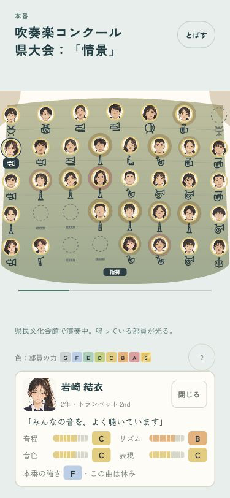
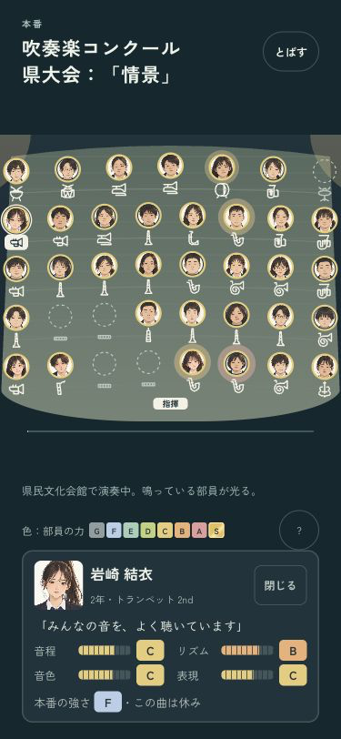
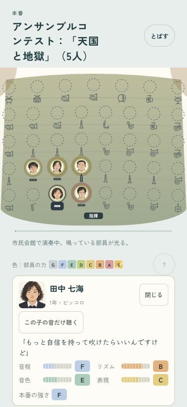

B · 舞台の中へ
この曲を休む子も、一緒の舞台に。
音符のない部員も、当日の席に残ります。顔を押すとその子のカードへ。本番の力は、当日の記録にそろえました。


本番後に育った力を、先に出さない
アンサンブルでも、演奏に使った当日の力を見せます。入場も空の舞台から始まり、全員がそろってから演奏します。

全15曲の音を保ち、曲を休む部員・当日の本人・入場・1年分の進行を確認済み。
iPhoneへ更新済み。端末ロック中のため起動は未確認です。
ミラーリングなし · codex/design · pushなし · 変更と確認の記録